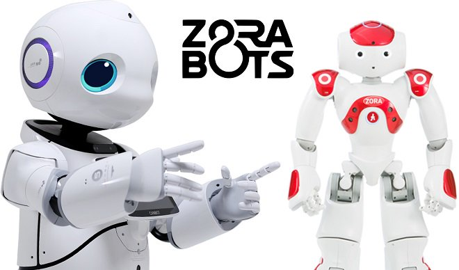
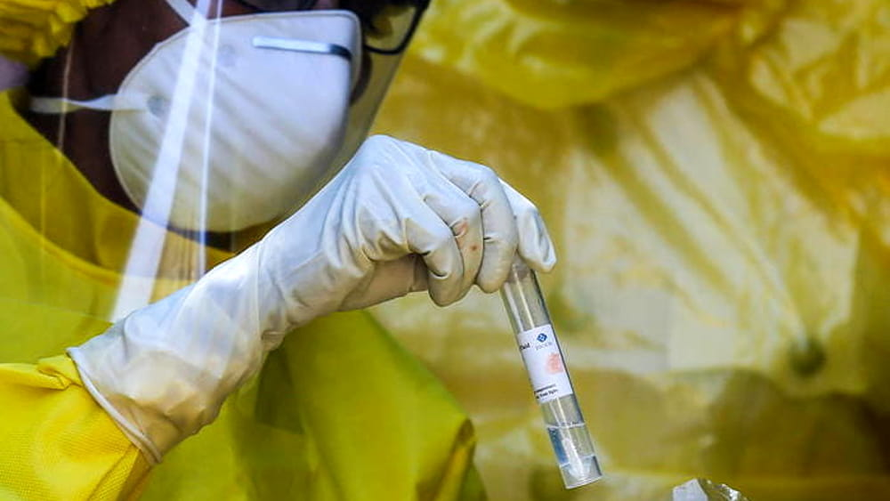
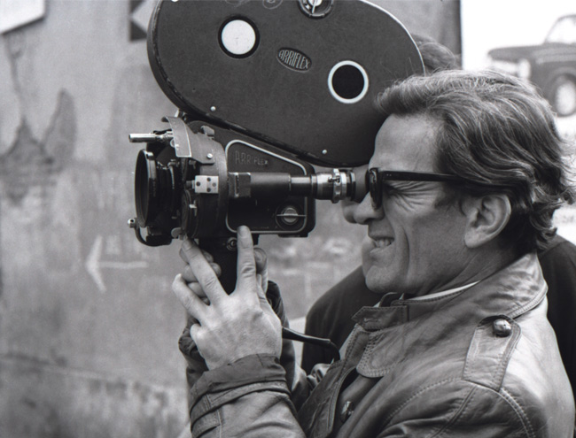
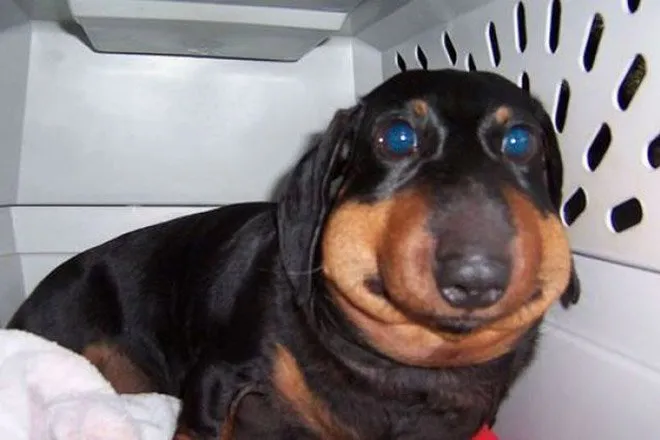
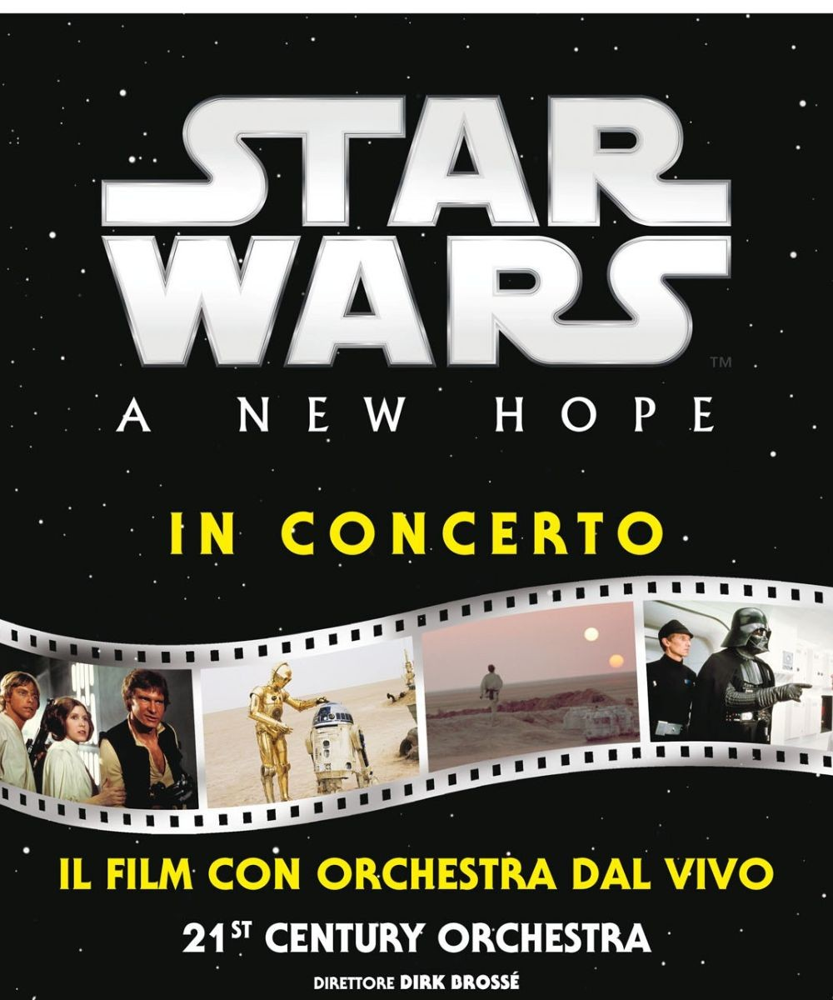

Una mostra interattiva dedicata al tema della robotica e al rapporto uomo-macchina, con esemplari di intelligenza artificiale e robotica provenienti da tutto il mondo. House of Robotics è un evento finalizzato a far avvicinare persone di tutte le età ad un mondo affascinante dalle molteplici applicazioni, essendoci la possibilità di interagire con robot umanoidi e altri progetti in grado di migliorare la qualità di vita dell'uomo.
Data: 2022-03-25T16:00 - 2022-06-06T20:00
Luogo: Manifattura Tabacchi, viale R. Margherita 33, Cagliari
Organizzatore: Dott. Pippo
Evento pubblicato dall'utente: Placentino
Costo del biglietto: 10.0 Euro
Tracciare un bilancio della gestione sanitaria del Covid, a partire dalla collaborazione tra ospedali e territorio, questo l'obiettivo del convegno dal titolo Coronavirus 2.0: a due anni dall'apocalisse, in programma a Quartu Sant'Elena, nella sala convegni dell'Hotel Setar. La conferenza si aprirà con un intervento su biologia ed evoluzione del Coronavirus, a seguire si parlerà del ruolo degli ultrasuoni nella diagnosi della malattia data dal virus e della gestione dei pazienti colpiti dal virus, ma anche di varianti del virus e vaccini.
Data: 2022-09-23T07:00 - 2022-07-23T18:00
Luogo: Hotel Setar, via Lipari 1/3, Quartu Sant'Elena
Organizzatore: Dott. Walter da Quartu
Evento pubblicato dall'utente: Angioni
Costo del biglietto: 3.0 Euro
Appuntamento organizzato per ricordare la figura di Pier Paolo Pasolini nel centenario della sua nascita, in cui una prima parte è incentrata su Medea (1969), capolavoro cinematografico indiscusso del poeta, incentrato sulla tragedia di Euripide che vede come protagonista Maria Callas. Attraverso racconti, testimonianze e aneddoti di chi conosceva Pasolini si ricostruirà il suo incontro con la Callas sul set del film, in un incontro ricco di approfondimenti grazie all'intervento di saggisti esperti nell'opera di Pasolini.
Data: 2022-12-30T16:00 - 2022-12-31T19:00
Luogo: Cineteca sarda, viale Trieste 126, Cagliari
Organizzatore: Dott. Topolino per la Cineteca Sarda, in collaborazione con Rai Teche
Evento pubblicato dall'utente: Cani
Costo del biglietto: 7.0 Euro
I nostri amati cuccioli sono continuamente infastiditi da un animale molto fastidioso. Le Api. Purtroppo quando vengono punti la loro faccia si ingrandisce e diventano carini e coccolosi, ma a loro fa un sacco male !!!! In questo evento parleremo di come si può evitare questo tipo di grave incidente e come eliminare le api in modo sistematico in modo tale da farle estinguere dall'intero universo. Ci vediamo !!!!
Data: 2022-09-01T06:30 - 2022-09-01T11:00
Luogo: Quartu
Organizzatore: Dottor. Gatto
Evento pubblicato dall'utente: Angioni
Costo del biglietto: 15.0 Euro
Arriva per la prima volta a Roma “Star Wars - A New Hope In Concert”, l’incredibile show con la proiezione completa del film su grande schermo in alta definizione e l’esecuzione dal vivo della colonna sonora del premio Oscar John Williams, in perfetto sincrono con le immagini, i dialoghi e gli effetti speciali. Compagni di avventure di Luke Skywalker e dei suoi amici saranno gli oltre 80 musicisti dell’Orchestra Italiana del Cinema, l’ensemble specializzato in musica da film, guidata per l’occasione dal M° Ludwig Wicki, direttore di fama internazionale e tra i massimi esperti di questa emozionante forma di concerto.
Data: 2022-09-26T12:00 - 2022-09-29T18:30
Luogo: Roma
Organizzatore: Roma Film Music Festival
Evento pubblicato dall'utente: Cani
Costo del biglietto: 150.0 Euro